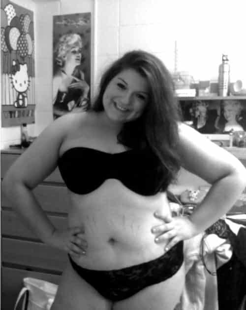

Daryush "Roosh" Valizadeh created ROK in October 2012. You can visit his blog at RooshV.com or follow him on Twitter and Facebook.


Take a look at this picture:

Let’s see what she has to say about her weight:
This picture is for the strange man at my nanny’s church who told me my belly was too big when I was five.
This picture is for my horseback riding trainer telling me I was too fat when I was nine.
This picture is for the girl from summer camp who told me I’d be really pretty if I just lost a few pounds
This picture is for all the fucking stupid advertising agents who are selling us cream to get rid of our stretch marks, a perfectly normal thing most people have (I got mine during puberty)
This picture is for the boy at the party who told me I looked like a beached whale. [lol]
You go, girl!
MOST OF ALL, this picture is for me. For the girl who hated her body so much she took extreme measures to try to change it.
Getting the tall frappucino instead of the venti is not extreme. Millions of thin people do it every day.
THIS IS MY BODY, DEAL WITH IT.
and FUCK YOU ALL who tried to degrade my being and sense of self with your hurtful comments and actions.
GUESS WHAT IT DIDN’T WORK HAHAHAHAH
And that’s the problem: the shaming didn’t work because other people told her to “be you” and too many thirsty guys still wanted to seduce her into bed. Now she’s bragging about her obesity on the internet and has gotten nearly 100,000 comments of validation. That weight is not going anywhere, and neither are the tiger claw marks on her stomach.
Source: The Body Love Blog